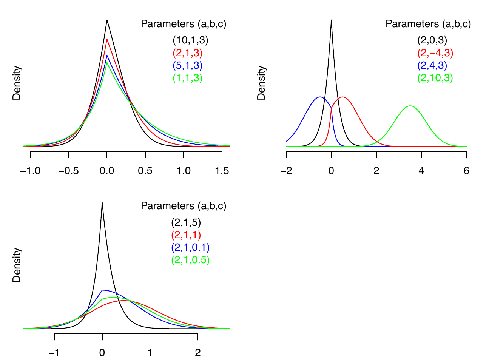
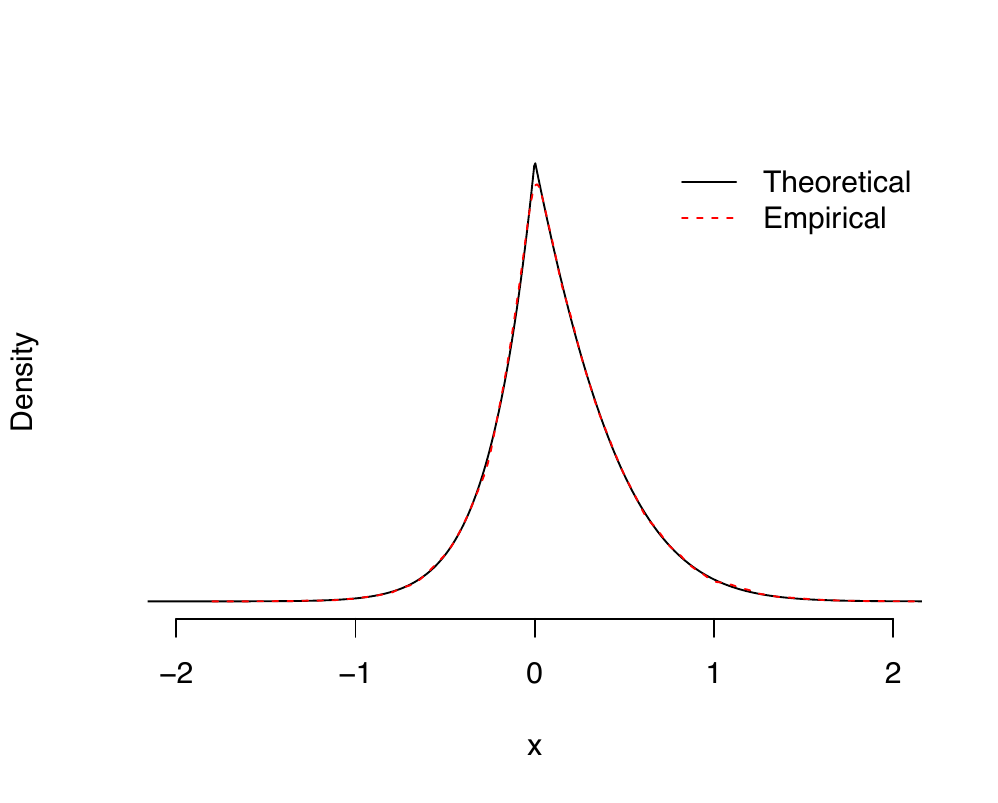

In this paper, we introduce a new probability distribution, the Lasso distribution. We derive several fundamental properties of the distribution, including closed-form expressions for its moments and moment-generating function. Additionally, we present an efficient and numerically stable algorithm for generating random samples from the distribution, facilitating its use in both theoretical and applied settings. We also establish that the Lasso distribution belongs to the exponential family. A direct application of the Lasso distribution arises in the context of an existing Gibbs sampler, where the full conditional distribution of each regression coefficient follows this distribution. This leads to a more computationally efficient and theoretically grounded sampling scheme. To facilitate the adoption of our methodology, we provide an R package, BayesianLasso, available on CRAN, implementing the proposed methods. Our findings offer new insights into the probabilistic structure underlying the Lasso penalty and provide practical improvements in Bayesian inference for high-dimensional regression problems.
The Lasso (Least Absolute Shrinkage and Selection Operator) regression method, introduced by Tibshirani (1996), has become a cornerstone in high-dimensional statistical modeling due to its ability to perform variable selection and regularization simultaneously. The Bayesian formulation of the Lasso has been extensively studied, often relying on a Laplace prior for the regression coefficients, which can be expressed as a scale mixture of a Gaussian distribution (Park and Casella 2008). However, despite its widespread use, existing formulations often face computational challenges, particularly in efficiently sampling from full conditional distributions in a Gibbs sampling framework (Hans 2009).
In this paper, we propose a new probability distribution, referred to as the Lasso distribution, which arises naturally in the Bayesian formulation of Lasso regression. We fully develop this distribution and derive several of its key properties, including moments, a moment-generating function, and an efficient, numerically stable method for sampling from it. Key to these derivations is the accurate and numerically stable evaluation of the Mills ratio that arises in several of these functions (Mills 1926). Further, we establish that the Lasso distribution belongs to the class of exponential family distributions, making it a theoretically attractive choice for modeling and inference. It is important to note that our formulation of the Lasso distribution differs from the one implemented in the LaplacesDemon package (Statisticat and LLC. 2021), which instead corresponds to the scale mixture of normals prior used in Park and Casella (2008).
As an application of the Lasso distribution, we note that it arises naturally as part of a Gibbs sampling scheme, where each coefficient is sampled individually (see Hans 2009). By leveraging the Lasso distribution as the full conditional distribution for the regression coefficients, we achieve a computationally efficient sampling scheme. To facilitate reproducibility and practical implementation, we provide an R package that implements our proposed methods.
The remainder of the paper is structured as follows. Section 2 outlines our Bayesian hierarchical model, which motivates the Lasso distribution. In Section 3, we introduce the Lasso distribution. In Section 3.1, we describe how to sample efficiently in a numerically stable manner from the Lasso distribution. Section 4 describes how to use the package BayesianLasso. An application of the Lasso distribution via Gibbs sampling is given in Section 5. We present a performance comparison on benchmark datasets in Section 6 and conclude with a brief discussion in Section 7.
We consider the standard linear regression model \({\bf y}|{\boldsymbol\beta},\sigma^2 \sim \mathcal{N}({\bf X}{\boldsymbol\beta}, \sigma^2 {\bf I}_n)\) for the observed dataset \({\mathcal D}= \{{\bf y}, {\bf X}\}\), where \({\bf y}\) is an \(n\)-dimensional vector of centered responses, \({\bf X}\) is an \(n \times p\) matrix of standardized predictors, \({\boldsymbol\beta}\) is a \(p\)-dimensional vector of regression coefficients, and \(\sigma^2\) denotes the residual variance parameter. In practice, it is often desirable to perform variable selection alongside parameter estimation, particularly when many covariates may be irrelevant. To this end, Tibshirani (1996) proposes Lasso penalized regression, which introduces an \(\ell_1\) penalty to encourage sparsity in the estimated coefficients. The regularization strength is governed by a non-negative tuning parameter \(\lambda\). The prior structure
\[\begin{equation} \label{eq:aux_representation} \beta_j| \sigma^2, \tau_j \sim N( 0, \sigma^2 \tau_j), \quad and \quad \tau_j \stackrel{\text{iid}}{\sim} \text{Gamma}(1,\lambda^2/2), \quad 1\leq j \leq p. \end{equation} \tag{1}\]
mimics this penalty when the auxiliary parameter \(\tau_j\) is marginalized out (Park and Casella 2008). This hierarchical representation allows for full posterior inference while promoting sparsity through the prior structure. Here, we adopt independent conjugate priors for \(\sigma^2\) and \(\lambda^2\): \(\sigma^2 \sim \text{IG}(\widetilde{a}, \widetilde{b})\) and \(\lambda^2 \sim Gamma(\widetilde{u},\widetilde{v})\) where \(\widetilde{a}>0\), \(\widetilde{b}>0\), \(\widetilde{u}>0\), and \(\widetilde{v}>0\) are fixed prior hyperparameters.
We propose a modification to the hierarchical prior model in (1) that introduces a different auxiliary-variable representation. Specifically, instead of the local scale parameter \(\tau_j\) used in (1), we introduce the variable \(\eta_j\) and express the prior for \(\beta_j\) through the alternative hierarchical formulation \[\begin{equation} \label{equ3} \beta_j | \sigma^2, \eta_j \sim N\left( 0, \frac{\sigma^2}{\eta_j\lambda^2} \right), \quad \text{and} \quad \eta_j \stackrel{\text{iid}}{\sim} \text{IG}(1, 1/2), \quad 1 \leq j \leq p. \end{equation} \tag{2}\]
This representation is not identical to (1) but is constructed so that the resulting full conditional distribution of \(\beta_j\) admits the kernel form given in (3), which facilitates the sampling strategy used in our Gibbs sampler.
Hans (2009) takes a different approach. Instead of using the auxiliary variable representations in (1) and (2), the standard Gibbs sampler of Hans (2009) samples from the full conditional distributions of the parameters individually, employing a weighted combination of two truncated normal distributions. It can be shown that the full conditional distribution for each \(\beta_j\) is proportional to \[\begin{align} \label{LassoProp} p(\beta_j|{\mathcal D},{\boldsymbol\beta}_{-j},\sigma^2,\lambda^2) \propto \exp\left(-\tfrac{1}{2}a\beta_j^2 + b\beta_j - c |\beta_j|\right) \end{align} \tag{3}\] where \(a\), \(b\), and \(c\) are constants that depend on \({\mathcal D}\), \({\boldsymbol\beta}_{-j}\), \(\sigma^2\), and \(\lambda^2\). This kernel corresponds to the weighted combination of two truncated normal distributions utilized by Hans (2009). Further details can be found in the Supplementary Material.
Although this conditional kernel can be expressed as a weighted mixture of truncated normal distributions and sampled within a Gibbs sampler (Hans 2009), it has not previously been formalized as a standalone distribution with explicitly derived analytical properties. In particular, Hans (2009) utilized the truncated normal mixture representation for computational purposes but did not formally study the kernel as a distinct probability distribution, derive its properties in closed form, or develop numerically stable normalization formulas. To address this challenge, we develop a new distribution, which we term the Lasso distribution, arising naturally in the context of the Lasso regression model. We establish its analytical properties together with stable computational methods and an accompanying open-source R package implementation. In the next section, we formally define the Lasso distribution and derive several of its key properties, including its probability density function (PDF), cumulative distribution function (CDF), moment generating function (MGF), and moments.
We derive several properties of the Lasso distribution, including the probability density function (PDF), cumulative density function (CDF), moment generating function (MGF), and moments. For detailed derivations, please refer to Section B of the Supplementary Materials.
A random variable \(X\) that maps from a probability space to the real line \(\mathbb{R}\) has a Lasso distribution with parameters \(a\), \(b\), and \(c\), denoted \(X \sim \text{Lasso}(a,b,c)\), if its PDF is \[ p(X,a,b,c) = Z^{-1}\exp\left(-\tfrac{1}{2}aX^2+bX-c|X|\right), \] where \(a \geq 0\), \(b \in \mathbb{R}\), \(c \geq 0\) (with \(a\) and \(c\) not both 0), and normalizing constant \(Z\) given by \[Z(a,b,c) = \int_{-\infty}^\infty \exp\left( -\tfrac{1}{2}aX^2 + bX - c|X| \right) dx = \sigma \left[ \frac{\Phi(\mu_1/\sigma)}{\phi(\mu_1/\sigma)} + \frac{\Phi(-\mu_2/\sigma)}{\phi(-\mu_2/\sigma)} \right],\] with \(\mu_1 = (b-c)/a\), \(\mu_2 = (b + c)/a\), and \(\sigma^{2} = 1/a\). Here, \(\Phi(\cdot)\) and \(\phi(\cdot)\) denote the CDF and PDF of the standard normal distribution, respectively. The parameter \(a\) controls the quadratic curvature of the density and governs its overall concentration. The parameter \(b\) introduces a linear tilt, inducing asymmetry and shifting mass toward positive or negative values. The parameter \(c\) controls the strength of the absolute value term, increasing concentration near zero and producing the characteristic cusp of the Lasso distribution. Evaluating \(Z\) can be numerically challenging due to potential overflow, underflow, or divide-by-zero problems. To address this, our R package BayesianLasso implements a numerically stable and efficient method for computing \(Z\), automatically managing these numerical difficulties (Ormerod et al. 2025).
The Lasso distribution can be written as a mixture of two truncated normal distributions. As we shall see, for different extreme values of \(a\), \(b\) and \(c\), the Lasso distribution can behave like a normal distribution, a Laplace distribution, an asymmetric Laplace distribution, a positively truncated normal distribution, or a negatively truncated normal distribution. By characterizing the limiting behavior under extreme parameter values, the R package BayesianLasso leverages appropriate approximations to known distributions ensuring robust and efficient computation even in numerically challenging settings. Figure 1 shows the density of the univariate Lasso distribution for different parameter values.

The MGF of the Lasso distribution is \(M(t) = Z(a,b+t,c)/Z(a,b,c)\) and the calculation of the moments of the Lasso distribution via the MGF is algebraically cumbersome. See Section B of the Supplementary Materials for the derivation of the MGF. However, by expressing the Lasso distribution as a mixture of two truncated normal distributions, the moments can be calculated as \(\mathbb{E}(X^r) = (1 - w) \cdot \mathbb{E}(A^r) + w \cdot \mathbb{E}(B^r),\) where the mixing proportion is given by \[ w = \left[ 1 + \frac{\Phi(\mu_1/\sigma)}{\phi(\mu_1/\sigma)}\frac{\phi(-\mu_2/\sigma)}{\Phi(-\mu_2/\sigma)} \right]^{-1}, \] where \(A\sim TN_+(\mu_1,\sigma^{2})\) and \(B\sim TN_-(\mu_2,\sigma^{2})\) are the positively truncated and negatively truncated normal distributions, respectively.
The CDF of the Lasso distribution is given by \[ P(x) = \mathcal{P}(X < x) = \left\{ \begin{array}{ll} \displaystyle w\frac{\Phi\left( \frac{x - \mu_2}{\sigma}\right)}{\Phi(-\mu_2/\sigma)} & \mbox{if $x\le 0$ and} \\ [2ex] \displaystyle 1 - (1 - w)\frac{\Phi(\frac{\mu_1 - x}{\sigma})}{\Phi(\mu_1/\sigma)} & \mbox{if $x> 0$}. \end{array} \right. \]
The inverse CDF of the Lasso distribution is given by \[\begin{align} P^{-1}(u) = \left\{ \begin{array}{ll} \mu_2 + \sigma\Phi^{-1}[\Phi(-\mu_2/\sigma) u/w] & \mbox{if $u\le w$ and} \\ [2ex] \mu_1 - \sigma\Phi^{-1}[\Phi(\mu_1/\sigma) (1 - u)/(1-w) ] & \mbox{if $u> w$}. \end{array} \right. \end{align} (\#equ:inv_CDF)\] Finally, the mode of the Lasso distribution is equal to \(\mbox{max}(|b| - c,0)\cdot\mbox{sign}(b)/a\), where \(\mbox{sign}(\cdot)\) is the sign function.
The R package BayesianLasso enables efficient and numerically stable sampling from the Lasso distribution by evaluating the inverse CDF using uniform random draws. To ensure robustness, particularly in the tails, the implementation incorporates safeguards against numerical issues such as overflow and underflow. A key component of this approach is the numerically stable evaluation of the Mills ratio, defined as \(m(x) = \Phi(-x)/\phi(-x)\), which is used in computing the normalizing constant. Specifically, the package computes \[ v_{1}=\frac{c-\left|b\right|}{\sqrt{a}} \qquad \mbox{and} \qquad v_{2}=\frac{c+\left|b\right|}{\sqrt{a}}, \] and evaluates the normalizing constant as \(Z = \left[m\left(v_{1}\right)+m\left(v_{2}\right)\right]/\sqrt{a}\). This combination of numerical stability and computational efficiency underpins the practical value of the package and is a key reason for its robustness in high-dimensional Bayesian inference.
Key quantities required for various expressions in the previous section include the computation of \(Z\) and \(w\). Additionally, special care must be taken when calculating the inverse CDF to prevent both overflow and underflow. To address these concerns, we define \(v_{1}=\left(c-\left|b\right|\right)/\sqrt{a}\) and \(v_{2}=\left(c+\left|b\right|\right)/\sqrt{a}\). The normalizing constant \(Z\) can then be expressed as \(Z = \left[m\left(v_{1}\right)+m\left(v_{2}\right)\right]/\sqrt{a}\). For negative inputs, i.e., \(x<0\), the Mills ratio is \(m\left(x\right)=\phi\left(x\right)^{-1}-m\left(-x\right)\). Since \(v_{2}\ge 0\) and \(v_{1}\ge 0\) when \(\left|b\right|\le c\), we can partition the definition of \(Z\) into two cases \[ Z =\begin{cases} \frac{1}{\sqrt{a}}\left[m\left(v_{1}\right)+m\left(v_{2}\right)\right] & \left|b\right|\le c \quad \mbox{and}\\ \frac{1}{\sqrt{a}}\left[\left(\phi\left(v_{1}\right)^{-1}-m\left(-v_{1}\right)\right)+m\left(v_{2}\right)\right] & \left|b\right|>c; \end{cases} \] where both alternatives have the requirement for two Mills ratio calculations for positive parameters; this is a potential use case for a SIMD, which is short for single instruction/multiple data, vectorized implementation of the positive side of the Mills ratio.
The second component of \(Z\) (for \(\left|b\right|>c\)) has an obvious potential overflow when \(\left|v_{1}\right|\) is large. In such cases, it may be necessary to transition to logarithmic space to represent \(\phi\left(v_{1}\right)\) to avoid underflow/overflow. However, unnecessary logarithmic computations should be avoided, as they are computationally expensive and can reduce numerical precision when not required. Marsaglia (2004) notes that the precision of evaluating the standard normal density function \(\phi\left(x\right)\) and its tail probability deteriorates as \(x\) increases, due to the limitations of computing \(\exp(-x^2/2)\) in double-precision arithmetic. While the paper primarily examines values up to \(x \approx 16\), it is also known that \(\phi\left(x\right)\) effectively loses all precision for \(x\geq 37\), where the exponential term underflows to zero and the reciprocal overflows. Now, consider the case where \(v_{1}<-37\), making overflow a concern. By definition, we have \(37<-v_{1}<v_{2}\), which implies \(m\left(37\right)>m\left(-v_{1}\right)>m\left(v_{2}\right)>0\). Since \(m\left(37\right)\approx0.027\), it follows that \(-0.027<m\left(v_{2}\right)-m\left(-v_{1}\right)<0\). Within the limits of double precision, this difference becomes negligible due to rounding errors for \(v_{1}\approx-9\), and certainly for \(v_{1}<-37\), where \(\phi\left(-37\right)<6\times10^{-300}\). Consequently, \(Z\) can be approximated as \[ Z \approx\frac{1}{\sqrt{a}}\left[\phi\left(v_{1}\right)^{-1}\right]. \] Thus, we can safely use the approximation \(m\left(v_{1}\right)\approx\phi\left(v_{1}\right)^{-1}\) in such cases.
For a fast and accurate approximation of Mill’s ratio for positive arguments, we employ a degree \(\left(8,9\right)\) rational polynomial optimized using the Remez algorithm (Reemtsen 1990) over the interval \(\left[0,600\right]\), achieving an accuracy of up to 12 significant figures. The leading coefficients of both the numerator and denominator are positive, ensuring that the approximation asymptotically converges to a small fraction. This stability allows the relative error to remain consistent, preserving 11 significant figures up to approximately \(x\approx2000\). Beyond this point, the precision gradually improves, as Mills ratio satisfies \(m(x) \sim 1/x\) for large \(x\).
Let \[ \begin{array}{c} p_0 = 46697.7602201933, \qquad p_1 = 69339.6909002865, \qquad p_2 =50590.6980372328, \\ p_3 = 23184.62760379742, \qquad p_4 = 7236.31450136984, \qquad p_5 = 1572.136841909630, \\ p_6 = 232.9967987466022, \qquad p_7 = 21.74833514806325, \qquad \mbox{and} \quad p_8 = 1.000000000000095. \end{array} \] and let \[ \begin{array}{c} q_0 = 37259.42190376593, \qquad q_1 = 85053.78630172011, \qquad q_2 = 89598.92885811838, \\ q_3 = 57370.93777717682, \qquad q_4 = 24713.27114352290, \qquad q_5 = 7467.311205544661, \\ q_6 = 1593.885178714749, \qquad q_7 = 233.9967987305447, \qquad q_8 = 21.74833514813385, \\ \end{array} \] and \(q_{9} = 1\). Let \[ \widetilde{m} = \frac{ p_0 + x(p_1 + x(p_2 + x( p_3 + x(p_4 + x(p_5 + x(p_6 + x(p_7 + xp_8))))))) }{ q_0 + x(q_1 + x(q_2 + x(q_3 + x(q_4 + x(q_5 + x(q_6 + x(q_7 + x(q_8 + x)))))))) }. \] Our approximation of \(m(x)\) for \(x>0\) is then \[ m(x) = \left\{\begin{array}{ll} \widetilde{m} & \mbox{$x < 1.75 \times 10^{34}$} \\ 1/x & \mbox{otherwise.} \end{array}\right. \]
Next, we define \[ w_{1}=\frac{1}{1+m\left(v_{1}\right)m\left(v_{2}\right)^{-1}} \qquad \mbox{and} \qquad w_{2}=\frac{1}{1+m\left(v_{1}\right)^{-1}m\left(v_{2}\right)}. \] As \(v_{1}\rightarrow-\infty\), it follows that \(m\left(v_{1}\right)\rightarrow\infty\), leading to \(w_{1}\rightarrow0\) and \(w_{2}\rightarrow1\). However, due to the dynamic range limitations of floating-point representation, \(w_{1}\) is representable, whereas \(w_{2}\) rounds to 1 for \(v_{1}\lessapprox-5.5\), resulting in a loss of precision. Since floating-point arithmetic offers much better precision near zero than near one, using \(w_{2}\) when \(v_{1}\ll0\) can introduce numerical errors. To mitigate this, we define \[ w=\begin{cases} w_{1} & \mbox{if } b\le0 \mbox{ and} \\ w_{2} & \mbox{if } b>0, \end{cases} \qquad \mbox{and} \qquad 1-w =\begin{cases} w_{2} & \mbox{if } b\le0 \mbox{ and} \\ w_{1} & \mbox{if } b>0. \end{cases} \] Thus, a simple yet numerically stable rule is to work with \(w\) when \(b\le0\) and with \(1-w\) when \(b>0\).
The computation of \(P^{-1}(u)\) is carried out in four distinct cases, determined by whether \(u \leq w\) and whether \(b > 0\). First, the arguments of \(\Phi^{-1}(\cdot)\) are carefully computed to prevent overflow. In extreme cases, underflow may still occur. When underflow is detected, the arguments of \(\Phi^{-1}(\cdot)\) are instead computed on the logarithmic scale, and the asymptotic tail formula of Mächler (2022) is used to evaluate \(\Phi^{-1}(\cdot)\) accurately.
To illustrate the functionality of the BayesianLasso package, we provide examples of its key functions, including density evaluation, cumulative distribution, random sampling, and quantile calculations.
The function dlasso() computes the probability density function of the
Lasso distribution for given parameters. The following example plots the
density of a \(\text{Lasso(2,1,3)}\) distribution, shown as a solid black
line in Figure 2.
library(BayesianLasso)
# Define parameters
a <- 2
b <- 1
c <- 3
x <- seq(-3, 3, length = 1000)
# Plot the density of Lasso(2,1,3)
plot(x, dlasso(x, a, b, c, logarithm = FALSE), type = 'l',
xlab = "x", ylab = "Density",
ylim = c(0, 2.25), yaxt = "n", bty = "n")The function plasso() calculates the cumulative distribution function
of the Lasso distribution. Below, we compute the CDF at \(x = -1\) for a
\(\text{Lasso}(2,1,3)\) distribution:
CDF_value <- plasso(-1, a, b, c)
print(CDF_value)
[1] 0.00176594To generate random samples from the Lasso distribution, we use
rlasso(). The following example generates 100,000 samples and compares
the empirical density with the theoretical density, as shown in Figure
2.
# Generate random samples
samples <- rlasso(100000, a, b, c)
# Compare empirical and theoretical density
plot(x, dlasso(x, a, b, c, logarithm = FALSE), type = "l", lty = 1,
xlab = "x", ylab = "Density",
xlim = c(-2, 2), yaxt = "n", bty = "n")
lines(density(samples), col = "red", type = "l", lty = 2)
legend("topright", legend = c("Theoretical", "Empirical"), col = c("black", "red"),
lty = c(1, 2), bty = "n")

-0.5cmdlasso(x, a, b, c, logarithm = FALSE) is shown as a solid
black line, and the empirical density is shown as a dashed
line.
To assess implementation accuracy, we compare empirical moments obtained
from Monte Carlo simulation with the theoretical mean, elasso(a,b,c),
and variance, vlasso(a,b,c), derived in
Section 3. For multiple parameter
configurations \((a,b,c)\) chosen to represent different scales and
degrees of concentration, \(10^5\) independent samples were generated
using rlasso(). The empirical mean and variance were computed and
compared with their analytical counterparts, and the absolute errors
between theoretical and empirical moments are reported in
Table 1.
| \((a,b,c)\) | Mean | Variance | ||||
|---|---|---|---|---|---|---|
| Theoretical | Empirical | Error | Theoretical | Empirical | Error | |
| \(( 2,\, 1,\, 3)\) | 0.121830 | 0.122919 | 0.001088 | 0.128773 | 0.129729 | 0.000955 |
| \((4 ,\, 4,\, 1)\) | 0.773432 | 0.773007 | 0.000425 | 0.228095 | 0.226861 | 0.001233 |
| \((1 ,\, 1,\,1 )\) | 0.503222 | 0.503450 | 0.000227 | 0.558956 | 0.559068 | 0.000111 |
Table 1 demonstrates close agreement between
the theoretical and empirical moments across all tested parameter
settings. For \(10^5\) independent Monte Carlo draws, the empirical means
and variances match their analytical counterparts to three or more
decimal places, with absolute errors uniformly below \(10^{-3}\). The
magnitude of these discrepancies is consistent with expected Monte Carlo
error, indicating that the random number generator rlasso() and the
analytical moment functions elasso() and vlasso() are correctly
implemented and numerically stable.
The inverse-CDF sampler corresponding to Equation
@ref(equ:inv_CDF) is implemented in C++ which is located in
src/lasso_distribution.cpp, and is exposed to users via the exported
Rcpp interface qlasso(). The required evaluations of the normal
cumulative distribution function and its inverse are performed using the
R math library routines R::pnorm5 and R::qnorm5. These routines
compute the normal CDF and quantile using piecewise rational
approximations with separate central and tail expansions, ensuring high
numerical accuracy and stability even for extreme probability values.
Below, we compute the quantiles for probability values \(p = \{0.1, 0.3, 0.6\}\):
p_values <- c(0.1, 0.3, 0.6)
quantiles <- qlasso(p_values, a, b, c)
print(quantiles)
[1] -0.28183916 -0.04935763 0.16137104A direct implementation of the Lasso distribution based on the density \[f(x \mid a,b,c) \propto \exp\!\left(-\frac{1}{2}ax^2 + bx - c|x|\right)\] can suffer from substantial numerical instability. In particular, naive evaluation of the normalizing constant may overflow when \(|b|/c\) is large, due to the exponential terms arising from Gaussian tail probabilities. Similarly, direct subtraction of nearly equal floating-point quantities in cumulative distribution function (CDF) computations may lead to catastrophic cancellation in extreme tail regions.
In addition, straightforward inversion of the CDF for quantile evaluation can fail without careful bracketing, particularly in highly skewed parameter regimes. These issues are common in naive implementations that rely solely on closed-form expressions without attention to floating-point behaviour.
The implementation in BayesianLasso mitigates these problems by
performing normalization and tail probability calculations on the
log-scale, separating positive and negative domains explicitly, and
using numerically stable bracketing procedures for quantile inversion.
These design choices ensure stable behaviour across a wide range of
parameter values.
We further investigated behaviour in limiting parameter regimes:
\(c \to 0\). In this limit, the Lasso distribution converges to a Gaussian distribution with mean \(b/a\) and variance \(1/a\). Numerical experiments demonstrate that the implementation transitions smoothly to this Gaussian case without discontinuity or instability.
\(a \to 0\). As \(a\) approaches zero, the quadratic term vanishes and the distribution approaches a Laplace-type density. Direct evaluation of normalization constants becomes ill-conditioned in this regime; however, the log-scale implementation maintains numerical stability and produces accurate density and distribution evaluations.
Large \(|b|/c\). When \(|b|/c\) is large, the distribution becomes highly skewed and naive exponential evaluations may overflow. The current implementation remains stable under such extreme skewness due to its log-scale normalization and careful handling of Gaussian tail probabilities.
These investigations demonstrate that the proposed implementation is robust not only in regular parameter settings but also in boundary and numerically challenging regimes. Such stability is essential for reliable use of the Lasso distribution in Bayesian computation and simulation-based inference.
In the next section, we incorporate the Lasso distribution into a Gibbs sampling algorithm as the full conditional distribution for the coefficients of the Lasso regression model.
We modify the Gibbs sampler of Hans (2009) (henceforth Hans) by using the Lasso distribution as the full conditional distribution of the regression coefficients. We also consider a slightly modified version of the Gibbs sampler of Park and Casella (2008) (henceforth PC), as the alternative Gibbs sampler, by changing the representation of the auxiliary variable from (1) to (2).
Furthermore, these Gibbs samplers are based on the prior \(\lambda^2\sim Gamma(\widetilde{u},\widetilde{v})\) which differs from Hans (2009), where the prior is placed on \(\lambda\) (which is conjugate) rather than \(\lambda^2\) (which is not conjugate in the modified Hans sampler). The primary motivation for this choice is to ensure consistency with the parameterization used in the PC Gibbs sampler, which is formulated in terms of \(\lambda^2\). This allows us to place both samplers under the same underlying model specification and enables a direct and fair comparison between their sampling strategies. In addition, modeling \(\lambda^2\) aligns naturally with the formulation of the Lasso distribution introduced in this paper, where \(\lambda^2\) enters directly into the quadratic form of the conditional density. This parameterization therefore provides a more coherent connection between the model and the proposed sampling approach. However, unlike the conjugate specification for \(\lambda\) in Hans (2009), placing the prior on \(\lambda^2\) breaks conjugacy, necessitating the use of a slice sampler (Neal 2003) for its full conditional distribution.
Theoretically, both specifications induce similar shrinkage behavior, but they differ in computational properties. The conjugate prior leads to simpler Gibbs updates, whereas the non-conjugate specification requires auxiliary sampling steps. In practice, this may affect mixing for \(\lambda^2\), leading to poorer mixing in some settings (e.g., the Crime dataset in Table 5), which we regard as a computational trade-off of the chosen parameterization. All methods are implemented in the same programming language and executed on the same computer, ensuring that the primary distinction lies in the choice of Gibbs samplers used to fit the model.
As stated earlier, the standard Gibbs sampler proposed by Hans (2009) relies on the fact that the full conditional distribution for each \(\beta_j\) is given by (3), and Hans (2009) notes that \(p(\beta_j|{\mathcal D},{\boldsymbol\beta}_{-j},\sigma^2,\lambda^2)\) can be represented as a mixture of two truncated normal distributions. This is not a well-known distribution to sample. However, we show care needs to be taken to avoid numerical problems using this representation.
To facilitate sampling from the kernel in (3), we utilize the Lasso distribution (\(Lasso(a,b,c)\)), which we introduced in Section 3. We also employ the efficient and numerically stable sampling method developed in Section 3.1 to draw samples from this distribution. Notably, while the Hans sampler is specifically designed for the Lasso distribution, it is difficult to extend to other response types or alternative penalty structures.
Algorithm 1 presents our modified version of Hans’ Gibbs sampling algorithm, where we model \(\lambda^2 \sim Gamma(\widetilde{u},\widetilde{v})\) instead of \(\lambda \sim Gamma(\widetilde{u},\widetilde{v})\). Unlike the original method in Hans (2009), which employs conjugate sampling for \(\lambda\) and rejection sampling for \(\sigma^2\), our approach collapses the auxiliary variable \(\eta_j\) to improve mixing and utilizes slice sampling for both \(\sigma^2 \mid {\mathcal D}, {\boldsymbol\beta}, \lambda^2\) and \(\lambda^2 \mid {\mathcal D}, {\boldsymbol\beta}, \sigma^2\) (Neal 2003). Notably, the same slice sampler is applied to both parameters, as their full conditional distributions are inverse transformations of each other.
Algorithm 1: Modified Hans Gibbs sampler
| 1: | Inputs: \({\bf y}\), \({\bf X}\), \(\widetilde{a}>0\), \(\widetilde{b}>0\), \(\widetilde{u}>0\), \(\widetilde{v}>0\), \({\boldsymbol\beta}^{(0)} = {\bf 0}_p\), \(\sigma^{2(0)}>0\), \(\lambda^{(0)}>0\); |
| 2: | for \(i = 1,\ldots,N\) do |
| 3: | \({\boldsymbol\beta}^{(i)} \leftarrow {\boldsymbol\beta}^{(i-1)}\); |
| 4: | if \(n>p\) then |
| 5: | \({\boldsymbol\delta} \leftarrow ({\bf X}^T{\bf X}) {\boldsymbol\beta}^{(i)}\); |
| 6: | for \(j = 1,\ldots,p\) do |
| 7: | \({\boldsymbol\delta} \leftarrow {\boldsymbol\delta} - {\bf X}_j \beta_j^{(i)}\); |
| 8: | \(\displaystyle \beta^{(i)}_j \sim \text{Lasso}\left( \frac{\| {\bf X}_j\|_2^2}{\sigma^{2(i-1)}}, \frac{({\bf X}^T{\bf y})_j - \delta_j}{\sigma^{2(i-1)}}, \frac{\lambda^{(i-1)}}{\sigma^{(i-1)}} \right);\) |
| 9: | \({\boldsymbol\delta} \leftarrow {\bf r} + {\bf X}_j \beta_j^{(i)}\); |
| 10: | end for |
| 11: | \(\mbox{RSS} \leftarrow \|{\bf y}\|_2^2 - 2{\bf y}^T{\bf X}{\boldsymbol\beta}_j^{(i)} + ({\boldsymbol\beta}_j^{(i)})^T{\bf X}^T{\bf X}{\boldsymbol\beta}_j^{(i)}\); |
| 12: | else |
| 13: | \({\bf y} \leftarrow {\bf X}{\boldsymbol\beta}^{(i)}\); |
| 14: | for \(j = 1,\ldots,p\) do |
| 15: | \({\bf r}_j \leftarrow {\bf y} - (\widehat{\bf y} - {\bf X}_{j}\beta^{(i-1)}_j);\) |
| 16: | \(\displaystyle \beta^{(i)}_j \sim \text{Lasso}\left( \frac{\| {\bf X}_j\|_2^2}{\sigma^{2(i-1)}}, \frac{{\bf X}_j^T{\bf r}_j}{\sigma^{2(i-1)}}, \frac{\lambda^{(i-1)}}{\sigma^{(i-1)}} \right);\) |
| 17: | \(\widehat{\bf y} \leftarrow \widehat{\bf y} + {\bf X}_{j}(\beta^{(i)}_j - \beta^{(i-1)}_j)\); |
| 18: | end for |
| 19: | \(\mbox{RSS} \leftarrow \|{\bf y} - \widehat{\bf y}\|_2^2\); |
| 20: | end if |
| 21: | Use slice sampling to sample \(\sigma^{2(i)}\) from the density \[ \displaystyle p(\sigma^2|{\mathcal D},{\boldsymbol\beta}^{(i)},\lambda^{2(i-1)}) \propto \exp\left[ (\widetilde{a} +\tfrac{n+p}{2} +1)\log(\sigma^{2}) - \left(\widetilde{b} + \tfrac{1}{2}\mbox{RSS}\right)\sigma^{-2} - \tfrac{\lambda^{(i-1)}}{\sigma}\| {\boldsymbol\beta}^{(i)} \|_1 \right]; \] |
| 22: | Use slice sampling to sample \(\lambda^{2(i)}\) from the density \[ \displaystyle p(\lambda^{2}|{\mathcal D},{\boldsymbol\beta}^{(i)},\sigma^{2(i)}) \propto \exp\left[ \left( \widetilde{u} + \tfrac{p}{2} - 1\right) \log(\lambda^{2}) - \widetilde{v}\lambda^{2(i-1)} - \tfrac{\lambda}{\sigma^{(i)}} \| {\boldsymbol\beta}^{(i)} \|_1 \right]. \] |
| 23: | end for |
In Algorithm 1, the quantity \({\bf r}_j\) is analogous to the partial residuals used in coordinate descent methods for optimizing the Lasso objective function (see, e.g., Hastie et al. 2015, sec. 5.4.2). However, rather than computing the mode of \(\beta_j|{\mathcal D},{\boldsymbol\beta}_{-j},\sigma^2\) as done in coordinate descent, we draw samples from its distribution.
Hans (2009) does not discuss the computational costs of the Gibbs samplers presented there. In contrast, our Algorithm 1 avoids matrix inversion, and as shown in Algorithm 1, sampling each variable requires \(\mathcal{O}(\min(n,p))\) time, assuming the quantities \({\bf X}^T{\bf X}\) (for \(n>p\)), \(diag({\bf X}^T{\bf X})\) and \({\bf X}^T{\bf y}\) are computed outside the main loop. Moreover, Algorithm 1 accommodates both the \(n>p\) and \(p>n\) settings, running in \(\mathcal{O}(N p \min(n,p))\) time where \(N\) is the number of samples drawn.
Note that our
BayesianLasso
package implements the modified Hans sampler via the function
Modified_Hans_Gibbs(). In this function, \({\bf X}\) and \({\bf y}\)
represent the covariate matrix and the response vector, respectively.
The arguments a1, b1, u1, and v1 correspond to the
hyperparameters of the priors for \(\sigma^2\) and \(\lambda^2\). The total
number of MCMC iterations is specified by nsamples, and the initial
values for \({\boldsymbol\beta}\), \(\sigma^2\) and \(\lambda^2\) are set via
beta_init, sigma2_init and lambda_init, respectively. The argument
verbose controls whether the sampling progress is printed during
execution. The argument thin controls the thinning interval of the
MCMC chain. Only every thin-th draw is stored. The default value is 1,
corresponding to no thinning.
Our modified PC Gibbs sampler is a modification of the Gibbs sampler developed in (Park and Casella 2008) and is presented in Algorithm 2 and consists of a four-block Gibbs sampling scheme for estimating the model parameters, auxiliary variables (using the representation (2)), and the tuning parameter \(\lambda^2\). Specifically, it involves sampling from the full conditional distributions: \([{\boldsymbol\beta}|{\mathcal D},\sigma^2,\lambda^2,{\boldsymbol\eta}]\), \([\sigma^2|{\mathcal D},{\boldsymbol\beta},\lambda^2,{\boldsymbol\eta}]\), \([\lambda^2|{\mathcal D},{\boldsymbol\beta},\sigma^2,{\boldsymbol\eta}]\), and \([{\boldsymbol\eta}|{\mathcal D},{\boldsymbol\beta},\sigma^2,\lambda^2]\). The time complexity of Algorithm 2 consists of a one-time precomputation cost and a per-iteration cost. Precomputing quantities such as \({\bf X}^\top{\bf X}\), \({\bf X}^\top{\bf y}\), and \(\|{\bf y}\|_2^2\) requires \(\mathcal{O}(np^2)\) operations. Each MCMC iteration then involves sampling \({\boldsymbol\beta}^{(i)}\) from a multivariate normal distribution, which requires computing a matrix square root—typically via Cholesky factorization or eigen-decomposition—and therefore incurs \(\mathcal{O}(p^3)\) operations per iteration (Golub and Loan 2013). The total complexity is thus \(\mathcal{O}(np^2 + Np^3)\), where \(N\) is the number of MCMC samples. A key advantage of this algorithm is that the per-iteration cost is independent of \(n\), making it particularly attractive when \(n\) is large; however, the cubic scaling in \(p\) becomes dominant as the number of predictors increases.
In contrast, the modified Hans sampler updates \({\boldsymbol\beta}\) coordinate-wise, with each coordinate update requiring \(\mathcal{O}(\min(n,p))\) operations. Updating all \(p\) coefficients therefore costs \(\mathcal{O}(p \min(n,p))\) per iteration, leading to total complexity \(\mathcal{O}(N p \min(n,p))\). Comparing per-iteration costs, the coordinate-wise updates scale as \(\mathcal{O}(p \min(n,p))\), while the multivariate update in the PC sampler scales as \(\mathcal{O}(p^3)\). As \(p\) increases, the cubic dependence in the multivariate approach becomes computationally expensive, whereas the coordinate-wise updates scale more favorably, particularly in high-dimensional settings. This complexity suggests that Algorithm 1 may be computationally more efficient than Algorithm 2 in high-dimensional settings, particularly when \(p\) is large relative to \(n\). This theoretical scaling is consistent with the empirical runtimes reported in Table 5, where the Hans sampler exhibits clear computational advantages in higher-dimensional settings. In addition, for very large \(p\), storing and factorizing the \(p \times p\) Gram matrix may become the dominant memory and computational bottleneck, further favoring coordinate-wise approaches in ultra-high-dimensional problems.
Algorithm 2: Modified PC Gibbs sampler
| 1: | Inputs: \({\bf y}\), \({\bf X}\), \(\widetilde{a}>0\), \(\widetilde{b}>0\), \(\widetilde{u}>0\), \(\widetilde{v}>0\), \(\lambda^2>0\), and \(\sigma^{2(0)}>0\). |
| 2: | \({\boldsymbol\eta}^{(0)} = {\bf 1}_n\); |
| 3: | for \(i = 1,\ldots,N\) do |
| 4: | \({\bf A} \leftarrow \text{diag}({\boldsymbol\eta}^{(i-1)})\); |
| 5: | \(\displaystyle {\boldsymbol\beta}^{(i)} \sim N_p\left[ ({\bf X}^T{\bf X} + \lambda^{2(i-1)}{\bf A})^{-1}{\bf X}^T{\bf y}, \sigma^{2(i-1)}({\bf X}^T{\bf X} + \lambda^{2(i-1)}{\bf A})^{-1} \right]\); |
| 6: | \(\displaystyle \sigma^{2(i)} \sim \text{IG}\left( \widetilde{a} + \tfrac{n+p}{2}, \widetilde{b} + \tfrac{1}{2}\| {\bf y} \|_2^2 - {\bf y}^T{\bf X} {\boldsymbol\beta}^{(i)} + \tfrac{1}{2}({\boldsymbol\beta}^{(i)})^T({\bf X}^T{\bf X} + \lambda^{2(i-1)}{\bf A}) {\boldsymbol\beta}^{(i)} \right)\); |
| 7: | \(\displaystyle \lambda^{2(i)} \sim \text{Gamma}\left( \widetilde{u} + \frac{p}{2}, \widetilde{v} + \frac{({\boldsymbol\beta}^{(i)})^T{\bf A}{\boldsymbol\beta}^{(i)}}{2\sigma^{2(i)}} \right)\); |
| 8: | for \(j = 1,\ldots,p\) do |
| 9: | \(\displaystyle \eta^{(i)}_j \sim \text{Inverse-Gaussian}\left( \frac{\sigma^{(i)}}{\lambda|\beta_j^{(i-1)}|},1 \right)\). |
| 10: | end for |
| 11: | end for |
Note that our
BayesianLasso
package implements the modified PC sampler via the function
Modified_PC_Gibbs(). In this function, \({\bf X}\) and \({\bf y}\)
represent the covariate matrix and the response vector, respectively.
The arguments a1, b1, u1, and v1 correspond to the
hyperparameters of the priors for \(\sigma^2\) and \(\lambda^2\). The total
number of MCMC iterations is specified by nsamples, and the initial
values for \(\sigma^2\) and \(\lambda^2\) are set via sigma2_init and
lambda_init. The argument verbose controls whether the sampling
progress is printed during execution. The argument thin controls the
thinning interval of the MCMC chain. Only every thin-th draw is stored.
The default value is 1, corresponding to no thinning. The MCMC outputs
returned by Modified_Hans_Gibbs() and Modified_PC_Gibbs() are
standard R matrices and vectors, which can be easily converted to
objects used by common MCMC diagnostic packages such as posterior and
coda. For example:
library(BayesianLasso)
fit <- Modified_Hans_Gibbs(X, y)
library(posterior)
draws <- as_draws_matrix(fit$mBeta)Alternatively, the samples can be converted to objects used by the
coda package:
library(coda)
mcmc_beta <- mcmc(fit$mBeta)The impact of autocorrelation within the chains on estimation
uncertainty can be quantified using the effective sample size (ESS). We
compute ESS using the ess_bulk() function from the
posterior package in
R (Bürkner et al. 2023; Vehtari et al. 2021). To evaluate the efficiency
of our proposed MCMC approach relative to the modified PC Gibbs sampler
and the aforementioned R packages, we use the following metric
\[Efficiency = \frac{ESS}{time};\]
where \(time\) represents execution time in seconds. All runtimes are
measured using system.time() to ensure consistent timing across
samplers. Additionally, we assess whether the MCMC samples have reached
a stationary distribution and exhibit adequate mixing using Gelman and
Rubin’s convergence diagnostic, \(\widehat{R}\) (Gelman and Rubin 1992).
We assess whether the outputs from each chain are indistinguishable by
examining the scale reduction factor, considering values below 1.1 as an
indication of convergence. We also evaluate the quality of mixing using
the ratio
\[Mix \% = 100 \times \frac{ESS}{N}\]
where \(N\) represents the total number of samples.
We use weakly informative priors for the variance and shrinkage parameters by setting \(\tilde a = \tilde b = \tilde u = \tilde v = 0.01\). These values correspond to diffuse Gamma priors on \(\sigma^2\) and \(\lambda^2\), allowing the posterior inference to be driven primarily by the data. In practice, the algorithm is not highly sensitive to small changes in these hyperparameters, although extremely informative priors may influence both shrinkage strength and MCMC mixing. As a general guideline, small values (e.g., \(0.01\)) provide weak regularization while maintaining stable posterior computation.
We conduct a controlled simulation study to compare the computational efficiency of the modified Hans sampler and the modified PC Gibbs sampler under a sparse linear regression setting.
We generate synthetic data from the linear model \[{\bf y}= {\bf X}{\boldsymbol\beta}+ {\boldsymbol\varepsilon},\] where \({\bf X}\in \mathbb{R}^{n \times p}\) has independent standard normal entries, \({\boldsymbol\beta}= (2,2,2,0,\ldots,0)^\top\) contains three non-zero coefficients and \(p-3\) zeros, and \({\boldsymbol\varepsilon}\sim \mathcal{N}(0,\textbf{I}_n)\). In our experiments we set \(n=100\) and \(p=10\). This configuration yields a moderately sparse setting with non-trivial shrinkage behaviour.
For both samplers we generate \(N=2000\) posterior samples with hyperparameters \((a_1,b_1,u_1,v_1) = (2,1,2,1)\). The first 200 iterations are discarded as burn-in. The modified Hans sampler is initialized with \(\beta^{(0)}=\mathbf{1}\), \(\lambda^{2(0)}=1\), and \(\sigma^{2(0)}=1\), while the modified PC sampler uses identical hyperparameter settings and initial variance parameters for comparability.
Table 2 summarizes the simulation results for the modified Hans and modified PC Gibbs samplers. While both samplers achieve comparable mixing percentages across all parameters, the modified Hans sampler yields substantially larger effective sample sizes for \({\boldsymbol\beta}\), \(\sigma^2\), and \(\lambda^2\), as well as a shorter computation time. In particular, the efficiency of the Hans sampler exceeds that of the PC sampler by approximately 44% for \({\boldsymbol\beta}\) (256.73 versus 178.45), 81% for \(\sigma^2\) (271.73 versus 149.97), and 151% for \(\lambda^2\) (223.75 versus 89.03), while also requiring less computation time (0.05 seconds versus 0.09 seconds). Overall, these results demonstrate that the modified Hans sampler provides markedly improved sampling efficiency at a lower computational cost in the simulated setting.
| \({\boldsymbol\beta}\) | Eff | \(\sigma^2\) | Eff | \(\lambda^2\) | Eff | Time | ||
| Dataset | Method | Mix % | (\(\times 10^2\)) | Mix % | (\(\times 10^2\)) | Mix % | (\(\times 10^2\)) | \(s\) |
| Simulated | Hans | 74.45 | 256.73 | 78.80 | 271.73 | 64.88 | 223.75 | 0.05 |
| PC | 85.65 | 178.45 | 71.98 | 149.97 | 42.73 | 89.03 | 0.09 |
Table 3 reports 95% credible intervals for the regression coefficients and hyperparameters in the simulated dataset with three nonzero coefficients (\(\beta_1=\beta_2=\beta_3=2\)) and the remaining coefficients equal to zero. For both the modified Hans and modified PC samplers, the 95% credible intervals for \(\beta_1,\beta_2,\) and \(\beta_3\) contain the true value 2, while the credible intervals for \(\beta_4,\ldots,\beta_{10}\) all contain 0. Consequently, the empirical coverage for \(\beta\) in this replicate is 1.00 overall, and also 1.00 when reported separately for nonzero and zero coefficients. The credible intervals for \(\sigma^2\) and \(\lambda^2\) are similar across the two samplers, indicating comparable posterior uncertainty for these hyperparameters in this simulated setting. Since \(\lambda^2\) is a prior hyperparameter rather than a parameter in the data-generating mechanism, no ground-truth value is available for coverage assessment in the simulation study.
| Hans | PC | |||
| Parameter | 95% CI (lo, hi) | Covered? | 95% CI (lo, hi) | Covered? |
| \(\beta_{1}\) (true \(=2\)) | (1.72, 2.12) | Yes | (1.69, 2.12) | Yes |
| \(\beta_{2}\) (true \(=2\)) | (1.85, 2.17) | Yes | (1.86, 2.19) | Yes |
| \(\beta_{3}\) (true \(=2\)) | (1.81, 2.24) | Yes | (1.82, 2.24) | Yes |
| \(\beta_{4}\) (true \(=0\)) | (-0.16, 0.22) | Yes | (-0.16, 0.22) | Yes |
| \(\beta_{5}\) (true \(=0\)) | (-0.15, 0.24) | Yes | (-0.15, 0.22) | Yes |
| \(\beta_{6}\) (true \(=0\)) | (-0.07, 0.30) | Yes | (-0.06, 0.29) | Yes |
| \(\beta_{7}\) (true \(=0\)) | (-0.12, 0.27) | Yes | (-0.13, 0.27) | Yes |
| \(\beta_{8}\) (true \(=0\)) | (-0.11, 0.26) | Yes | (-0.11, 0.27) | Yes |
| \(\beta_{9}\) (true \(=0\)) | (-0.37, 0.01) | Yes | (-0.35, 0.02) | Yes |
| \(\beta_{10}\) (true \(=0\)) | (-0.16, 0.19) | Yes | (-0.16, 0.18) | Yes |
| \(\sigma^{2}\) (true \(=1\)) | (0.81, 1.40) | Yes | (0.81, 1.42) | Yes |
| \(\lambda^{2}\) | (0.75, 4.72) | – | (0.75, 4.72) | – |
| Coverage (nonzero \(\beta\)) | 1.00 | 1.00 | ||
| Coverage (zero \(\beta\)) | 1.00 | 1.00 | ||
| Coverage (overall \(\beta\)) | 1.00 | 1.00 | ||
Table 4 summarizes variable selection performance over 100 simulated datasets with three nonzero coefficients and seven zeros. Both samplers achieved perfect sensitivity (1.00) and zero false negative rate, indicating that all true signals were consistently selected across replicates. The overall selection accuracy was high for both methods (approximately 0.97), with specificity around 0.95, implying that occasional false positives occurred among truly zero coefficients. Consistent with this, the false discovery rate was low (about 0.07 on average) for both samplers.
| Method | Accuracy | Sensitivity | Specificity | FDR | FNR |
|---|---|---|---|---|---|
| Hans | \(0.97 \pm 0.06\) | \(1.00 \pm 0.00\) | \(0.96 \pm 0.08\) | \(0.07 \pm 0.13\) | \(0.00 \pm 0.00\) |
| PC | \(0.97 \pm 0.06\) | \(1.00 \pm 0.00\) | \(0.95 \pm 0.09\) | \(0.07 \pm 0.13\) | \(0.00 \pm 0.00\) |
Out-of-sample predictive performance was evaluated using mean squared error (MSE) on an independently generated test dataset. The modified Hans and PC samplers achieved nearly identical predictive accuracy, with test MSE values of 1.077 and 1.075, respectively. Both values are close to the true noise variance (\(\sigma^2 = 1\)) used in the data-generating process, indicating that the fitted models provide well-calibrated predictions. The negligible difference between the two samplers suggests that, despite differences in sampling efficiency, their predictive performance in this simulated setting is essentially equivalent.
In this section, we compare the performance of our modified Hans sampler with our modified PC Gibbs sampler, as well as the R packages monomvn, bayeslm, rstan, and bayesreg (Gramacy 2024; He et al. 2022; Stan Development Team 2020; Makalic and Schmidt 2016). The comparison is based on several benchmark datasets that represent a diverse range of scenarios where \(n>p\), \(p>n\) and \(p \gg n\). For \(n>p\), we consider the Diabetes dataset with all pairwise interactions of the original variables (referred to as Diabetes\({}^2\)) from the lars package (Efron et al. 2004; Hastie and Efron 2022), with \(n = 442\) and \(p = 55\); the Kakadu dataset with all pairwise interactions (Kakadu\({}^2\)) from the Ecdat package (Croissant and Graves 2022), with \(n = 1827\) and \(p = 252\); and the Crime dataset from the UCI Machine Learning Repository with \(n = 2215\) and \(p = 98\) (Redmond 2002).
We use 1,000 burn-in samples followed by 5,000 samples for inference. The computations were performed on an Apple M1 Pro with 12 cores and 16 GB of RAM. The Gibbs sampler methods were implemented in the R programming language (version 4.4.2), leveraging the computational efficiency of the Rcpp (version 1.0.13-1) (Eddelbuettel, Francois, Allaire, et al. 2024; Eddelbuettel and François 2011; Eddelbuettel 2013; Eddelbuettel and Balamuta 2018) and RcppArmadillo (version 14.2.2-1) (Eddelbuettel and Sanderson 2014; Eddelbuettel, Francois, Bates, et al. 2024) packages. All Gibbs samplers developed here were run 5 times on all datasets and the results were averaged.
Table 5 presents the mixing percentages, sampling efficiencies, and elapsed times (in seconds) for the modified Hans and PC Gibbs samplers applied to the benchmark datasets Diabetes\({}^2\), Kakadu\({}^2\), and Crime. It is important to note that the Gelman–Rubin diagnostic \(\widehat{R}\) for each model parameter was below 1.01, indicating convergence, and the effective sample size (ESS) for \({\boldsymbol\beta}\) corresponds to the median of the ESS values for the \(p\)-dimensional vector \({\boldsymbol\beta}\). The results indicate that the modified Hans sampler is the most efficient for sampling \(\sigma^2\) and \(\lambda^2\) in the Diabetes\(^2\) and Kakadu\(^2\) datasets, and also the most efficient for sampling \({\boldsymbol\beta}\) in both the Diabetes\(^2\) and Kakadu\(^2\) datasets. For the Crime dataset, the modified PC sampler achieves the highest efficiency for sampling \({\boldsymbol\beta}\), while bayeslm achieves the highest efficiency for \(\lambda^2\), and the modified Hans sampler achieves the highest efficiency for \(\sigma^2\). Furthermore, the modified Hans sampler achieves the shortest computation time across all three datasets: Diabetes\(^2\), Kakadu\({}^2\), and Crime. Note that monomvn was extremely slow on the Kakadu\(^2\) dataset. Therefore, its output is reported as NA, as it was not within a comparable range of performance with the other samplers.
| \({\boldsymbol\beta}\) | Eff | \(\sigma^2\) | Eff | \(\lambda^2\) | Eff | Time | ||
| Dataset | Method | Mix % | (\(\times 10^2\)) | Mix % | (\(\times 10^2\)) | Mix % | (\(\times 10^2\)) | \(s\) |
| Diabetes\(^2\) | Hans | 26.91 | 50.77 | 75.62 | 142.68 | 27.13 | 51.20 | 0.21 |
| PC | 78.21 | 38.34 | 74.80 | 36.67 | 15.73 | 7.71 | 0.81 | |
| monomvn | 98.14 | 0.72 | 97.08 | 0.71 | 96.11 | 0.71 | 59.21 | |
| bayeslm | 12.28 | 10.24 | 50.43 | 42.27 | 4.29 | 3.58 | 0.48 | |
| rstan | 98.50 | 0.57 | 94.55 | 0.55 | 99.21 | 0.58 | 68.51 | |
| bayesreg | 77.26 | 14.59 | 61.62 | 11.59 | 17.52 | 3.33 | 2.15 | |
| Kakadu\(^2\) | Hans | 19.29 | 3.22 | 78.85 | 13.16 | 5.51 | 0.92 | 2.39 |
| PC | 85.64 | 0.76 | 72.99 | 0.65 | 7.88 | 0.07 | 44.70 | |
| monomvn | NA | NA | NA | NA | NA | NA | NA | |
| bayeslm | 15.13 | 1.80 | 52.54 | 3.72 | 2.46 | 0.17 | 6.16 | |
| rstan | 98.45 | 0.12 | 98.43 | 0.12 | 96.49 | 0.12 | 347.10 | |
| bayesreg | 84.65 | 1.98 | 69.65 | 1.63 | 4.34 | 0.10 | 17.08 | |
| Crime | Hans | 6.02 | 5.93 | 9.42 | 9.28 | 0.24 | 0.24 | 0.40 |
| PC | 83.65 | 9.89 | 24.22 | 2.86 | 12.11 | 1.43 | 3.38 | |
| monomvn | 97.76 | 0.04 | 97.38 | 0.04 | 98.76 | 0.04 | 862.59 | |
| bayeslm | 5.37 | 2.19 | 13.94 | 5.65 | 3.79 | 1.53 | 0.98 | |
| rstan | 98.07 | 0.55 | 92.44 | 0.52 | 92.39 | 0.52 | 70.81 | |
| bayesreg | 81.84 | 9.09 | 29.38 | 3.27 | 13.62 | 1.51 | 3.62 |
For these datasets, the modified Hans sampler exhibits lower mixing percentages for \({\boldsymbol\beta}\) relative to \(\sigma^2\). This is consistent with the coordinate-wise structure of the algorithm, where regression coefficients are updated sequentially and mixing can be slower in the presence of strong posterior dependence among predictors. In contrast, \(\sigma^2\) is a scalar global parameter whose full conditional depends on aggregate quantities — namely, the residual sum of squares and \(\|{\boldsymbol\beta}\|_1\) — resulting in substantially faster mixing.
Table 6 presents results for two
high-dimensional settings in which the number of predictors exceeds the
number of observations (\(p > n\)). Specifically, the Eye dataset contains
\(n = 120\) observations and \(p = 200\) predictors, while the Riboflavin
dataset has \(n = 71\) observations and \(p = 4088\) predictors. These
settings illustrate the performance of the samplers under challenging
high-dimensional regimes, particularly when \(p \gg n\). Here, we use
1,000 burn-in samples followed by 10,000 samples for inference. We
report results for the Hans and PC Gibbs samplers implemented in the
BayesianLasso package, as well as for the bayesreg package. Other
samplers and R packages were not included due to their prohibitively
high computational cost in these settings, resulting in runtimes that
were not directly comparable. Notably, the PC sampler was extremely slow
on the Riboflavin dataset; consequently, its results are reported as NA,
as they were not obtained within a comparable computational budget. This
behaviour is expected, as the computational cost of the PC sampler
scales cubically with \(p\), that is, \(\mathcal{O}(np^2 + Np^3)\).
| \(\beta\) | \(\sigma^2\) | \(\lambda^2\) | Time | |||||
| Dataset | Method | Mix % | Eff (\(\times 10^2\)) | Mix % | Eff (\(\times 10^2\)) | Mix % | Eff (\(\times 10^2\)) | \(s\) |
| Eye | Hans | 25.14 | 19.07 | 7.44 | 5.64 | 2.96 | 2.25 | 1.32 |
| PC | 78.28 | 2.89 | 5.97 | 0.21 | 3.71 | 0.13 | 27.44 | |
| bayesreg | 79.28 | 2.89 | 5.90 | 0.31 | 3.33 | 0.17 | 19.08 | |
| Riboflavin | Hans | 9.67 | 0.70 | 0.13 | 0.01 | 0.05 | 0.00 | 13.95 |
| PC | NA | NA | NA | NA | NA | NA | NA | |
| bayesreg | 96.33 | 0.41 | 0.08 | 0.00 | 0.07 | 0.00 | 234.08 | |
Based on the results shown in
Table 6, the modified Hans sampler
generally exhibits substantially higher efficiency and markedly shorter
computation times compared with the competing methods. For the Eye
dataset (\(n = 120\), \(p = 200\)), the Hans sampler attains the largest
efficiency across all parameters while maintaining the shortest runtime.
In contrast, the PC sampler and the bayesreg implementation yield
considerably lower efficiencies and require longer computation times.
These differences become more pronounced for the Riboflavin dataset
(\(n = 71\), \(p = 4088\)). As the dimensionality increases, the PC sampler
becomes computationally infeasible, while bayesreg incurs a
substantial computational cost of 234.08 seconds. In comparison, the
modified Hans sampler maintains higher efficiency for
\({\boldsymbol\beta}\) and \(\sigma^2\), together with a substantially lower
runtime of 13.95 seconds. Overall, these results indicate that the Hans
sampler is more computationally efficient and scalable in
high-dimensional settings, making it well suited for Bayesian Lasso
regression when \(p \gg n\).
This paper introduces the BayesianLasso R package, which provides a comprehensive and computationally efficient implementation of Bayesian Lasso regression based on a newly defined Lasso distribution. The package encapsulates recent methodological advances by offering implementations of both the modified Hans and PC Gibbs samplers, tailored to exploit the distributional structure of the Lasso prior.
Central to the package is the formal development of the Lasso distribution, which we establish as a member of the exponential family. We derive key theoretical properties—including the probability density function, cumulative distribution function, moments, and a numerically stable inverse-CDF sampling method—which underpin the samplers implemented in the package. In particular, the Lasso distribution serves as the full conditional distribution for regression coefficients in the proposed Gibbs sampling framework.
The BayesianLasso package is designed with usability and extensibility in mind, offering an accessible interface for researchers and practitioners to fit Bayesian Lasso models in regression settings. The package also provides utility functions for working directly with the Lasso distribution, including density evaluation, random sampling, and cumulative probability calculations.
Our empirical evaluations demonstrate that the modified Hans sampler
achieves strong computational efficiency and favorable mixing behavior
across both low-dimensional and high-dimensional settings. In the
benchmark datasets where \(n > p\) (Diabetes\(^2\), Kakadu\(^2\), and Crime),
the results show that the modified Hans sampler attains substantially
higher sampling efficiency for all parameters in the Diabetes\(^2\) and
Kakadu\(^2\) datasets. In the Crime dataset, it achieves the highest
efficiency for \(\sigma^2\) and the shortest computation time, though the
PC sampler and bayeslm attain higher efficiency for
\({\boldsymbol\beta}\) and \(\lambda^2\), respectively. Overall, the
modified Hans sampler consistently achieves the shortest computation
times across all three datasets, indicating strong computational
scalability relative to existing implementations.
Similar patterns are observed in high-dimensional settings (\(p > n\)),
represented by the Eye and Riboflavin datasets. In these scenarios, the
modified Hans sampler demonstrates substantially higher sampling
efficiency across all parameters in the Eye dataset, while also
achieving markedly lower computation times compared with alternative
implementations. For the Riboflavin dataset, the PC sampler becomes
computationally infeasible, and while bayesreg remains applicable, it
incurs a substantially higher computational cost. The modified Hans
sampler maintains higher efficiency for \({\boldsymbol\beta}\) and
\(\sigma^2\) alongside a markedly shorter runtime, highlighting its
robustness and scalability in challenging high-dimensional regimes where
efficient posterior exploration is critical.
Overall, the empirical results suggest that the modified Hans sampler
provides an effective and computationally scalable approach for
posterior inference in Bayesian Lasso models. By integrating the method
into an easy-to-use R package, we aim to facilitate its adoption and
support broader use of Bayesian Lasso methodology in applied statistical
analysis.
The Gibbs-based approach developed in this paper is particularly
attractive when the model admits structured conditional distributions
that can be exploited for efficient updates, as in the Gaussian Bayesian
Lasso considered here. Compared to Hamiltonian Monte Carlo (HMC) as
implemented in Stan, the proposed sampler avoids gradient evaluations
and matrix factorizations at each iteration, leading to substantially
lower per-iteration computational cost in high-dimensional settings.
While HMC can exhibit superior mixing for strongly correlated parameters
due to joint updates, its computational burden scales cubically in the
number of predictors for dense regression models.
Relative to variational inference, the Gibbs sampler provides asymptotically exact posterior samples rather than approximate solutions. Although variational methods are typically faster, they may underestimate posterior uncertainty, particularly in hierarchical shrinkage models where strong posterior dependence is present. Therefore, the proposed Gibbs sampler is especially preferable in moderate- to high-dimensional Gaussian regression problems where exact posterior inference is desired and structured conditional updates can be exploited.
The current implementation focuses on Gaussian linear regression, where the conditional distribution of each regression coefficient can be expressed in terms of the Lasso distribution introduced in this paper, enabling efficient Gibbs updates. Extensions to generalized linear models (GLMs) are conceptually possible by combining the proposed Lasso distribution with suitable data augmentation schemes, so that conditional updates remain tractable within a Gibbs framework.
Extensions to related penalization schemes such as the elastic net or
group Lasso are also feasible through modifications of the prior
structure. The elastic net can be obtained by combining \(\ell_1\) and
\(\ell_2\) penalties via an additional Gaussian shrinkage component, while
the group Lasso requires block-wise shrinkage priors defined on groups
of coefficients. In these cases, the general Gibbs sampling framework
remains applicable, although the form of the conditional distributions
and the associated computational complexity would differ. These
extensions represent promising directions for future development of the
BayesianLasso package.
The R package BayesianLasso implementing the methods described in this paper is available on CRAN at https://CRAN.R-project.org/package=BayesianLasso and on GitHub at https://github.com/garthtarr/BayesianLasso.
The authors declare that they have no conflict of interest.
The following source of funding is gratefully acknowledged: Australian Research Council Discovery Project grant (DP210100521).
Supplementary materials are available in addition to this article. It can be downloaded at RJ-2026-056.zip
LaplacesDemon, BayesianLasso, posterior, monomvn, bayeslm, rstan, bayesreg, lars, Ecdat, Rcpp, RcppArmadillo
Bayesian, Distributions, Econometrics, HighPerformanceComputing, MachineLearning, MissingData, MixedModels, NumericalMathematics, TimeSeries
This article is converted from a Legacy LaTeX article using the texor package. The pdf version is the official version. To report a problem with the html, refer to CONTRIBUTE on the R Journal homepage.
Text and figures are licensed under Creative Commons Attribution CC BY 4.0. The figures that have been reused from other sources don't fall under this license and can be recognized by a note in their caption: "Figure from ...".
For attribution, please cite this work as
Davoudabadi, et al., "The Lasso Distribution: Properties, Sampling Methods, and Applications in Bayesian Lasso Regression", The R Journal, 2026
BibTeX citation
@article{RJ-2026-056,
author = {Davoudabadi, Mohammad Javad and Tidswell, Jonathon and Muller, Samuel and Tarr, Garth and Ormerod, John T.},
title = {The Lasso Distribution: Properties, Sampling Methods, and Applications in Bayesian Lasso Regression},
journal = {The R Journal},
year = {2026},
note = {https://doi.org/10.32614/RJ-2026-056},
doi = {10.32614/RJ-2026-056},
volume = {18},
issue = {4},
issn = {2073-4859},
pages = {1}
}